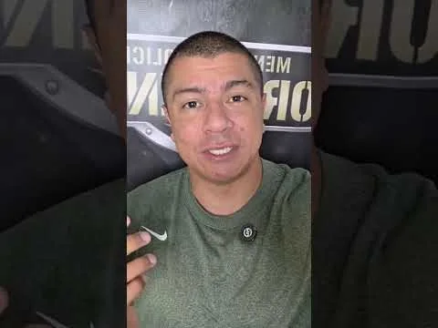
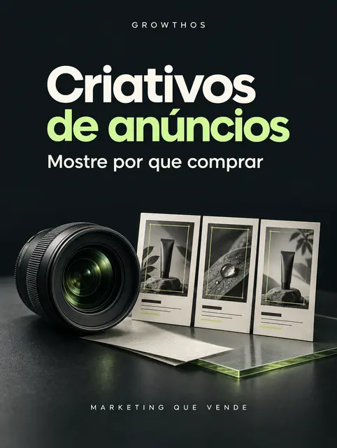
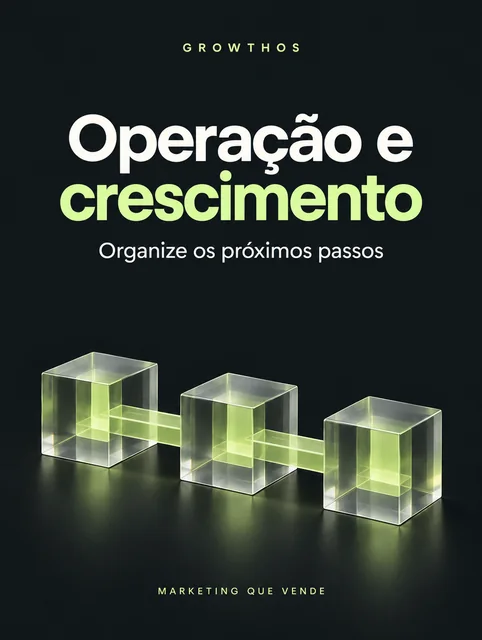
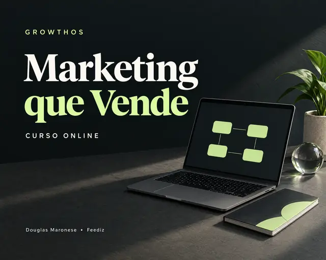

“Eu posto.
Mas quase ninguém chama.”
Você precisa de argumentos que ajudem o cliente a entender por que comprar, além de ideias para preencher o feed.
CURSO DE MARKETING · COM DOUGLAS MARONESE
Você conhece o valor do que faz. Agora, aprenda a explicar esse valor para quem ainda não conhece você. Um curso de marketing para organizar sua oferta, sua página e seus anúncios.
Com Douglas Maronese, fundador da Feediz. Aulas gravadas, trabalhos reais da agência e materiais para aplicar no seu produto ou serviço.
QUERO ACESSAR O CURSO10 módulos + 4 materiais por R$ 47,90 · pagamento único
Veja uma amostra antes de decidir ↓

Experiência profissional.EXPERIÊNCIA DA FEEDIZ EM PROJETOS PARA
SE VOCÊ SE RECONHECE AQUI, CONTINUE
É frustrante cuidar de cada detalhe do que você vende e, na hora de mostrar isso ao mundo, sentir que está sempre começando do zero.
Você precisa de argumentos que ajudem o cliente a entender por que comprar, além de ideias para preencher o feed.
Oferta, página, criativo, anúncio, IA… Sem uma sequência, fica difícil transformar informação em algo pronto.
Antes do investimento, faz diferença entender o que testar, para onde levar o clique e quais números acompanhar.
O próximo passo pode ser mais claro.
É esse caminho que eu organizei no GrowthOS.
ABRA O MATERIAL. ENTENDA O RACIOCÍNIO.
Estas são páginas dos materiais incluídos no curso. Leia um exemplo comentado e experimente um dos prompts. Sem cadastro.
DO TRABALHO REAL PARA O APRENDIZADO
Na peça da Pure Pilates, o convite é específico: uma aula experimental. O BlackBook comenta a proposta, o próximo passo e a importância de entregar valor já na primeira experiência.
Para aplicar: escolha uma primeira entrega útil do seu negócio, explique o que está incluído e deixe claro como a pessoa pode comprar ou agendar.
“A experiência inicial deve ter valor próprio. Não dependa de uma segunda compra para cumprir o que foi prometido.”
BlackBook, página 5 de 24. A peça demonstra uma escolha de comunicação; não apresenta uma taxa de conversão ou promessa de vendas.
DA IDEIA PARA O CALENDÁRIO
Depois de definir sua oferta, use o caderno anual para organizar campanhas e o que precisa estar pronto antes de divulgar.
Exemplo de preenchimento, ilustrativo: campanha de apresentação do serviço → preparar fotos e condições → revisar a página → divulgar → conferir os resultados.
EXPERIMENTE 1 DOS 24 PROMPTS INCLUÍDOS
Preencha o contexto para montar um comando que você pode usar na sua ferramenta de IA. É uma amostra do mapa de aplicação.
O formulário só monta o texto no seu navegador. Não envia suas respostas nem gera uma oferta automaticamente.
Depois de usar na IA, confira se a proposta é verdadeira, específica e fácil de entender. No curso, você continua pela página, pelos conteúdos e pelos anúncios.
Quero continuar com o curso completo ↗O QUE É O GROWTHOS?
Um curso online de marketing, com aulas gravadas e materiais de aplicação. Você aprende a apresentar o que vende, organizar uma página e preparar sua divulgação com conteúdo, anúncios e apoio de IA.
Eu reuni os métodos que utilizo nas empresas que a Feediz atende. Você acompanha meu raciocínio e trabalha no seu próprio produto ou serviço, no seu ritmo.
UM NEGÓCIO SEU. TRÊS ENTREGAS PARA TRABALHAR.
Escolha um produto ou serviço e avance com ele ao longo das aulas. Você faz a aplicação no seu ritmo, com esta sequência como referência.
Trabalhe público, benefício, entrega e condições em uma apresentação clara.
Seu próximo passo: escrever uma oferta que alguém de fora consiga entender.
Organize argumentos, imagens, dúvidas e chamada para compra.
Seu próximo passo: montar a estrutura da página e preparar peças de divulgação.
Conheça a estrutura de anúncios e organize o que vai acompanhar.
Seu próximo passo: definir a oferta do teste, as peças e o limite de gasto.
CONHEÇA O CURSO POR DENTRO
São 10 módulos incluídos na mesma compra, do primeiro diagnóstico à divulgação. Veja o que você vai estudar e aplicar ao seu negócio.
Seu roteiro de estudo e os materiais para começar a aplicação.
Entenda o raciocínio por trás das decisões de marketing.
Defina para quem vende e por que o cliente deve escolher você.
Organize seu conhecimento em uma proposta para vender.
Apresente sua oferta, responda às dúvidas e conduza à compra.
Pense conteúdos que mostrem o valor do seu produto ou serviço.

Prepare argumentos, imagens e vídeos para seus testes.
Entenda como estruturar uma campanha e começar a anunciar.

Organize a execução e os próximos passos do negócio.
Trabalhe clareza, decisões e uma rotina para seguir aplicando.
Todos os módulos + os 4 materiais de apoio estão incluídos.
Aulas gravadas para estudar no seu ritmo. BlackBook, caderno anual, mapa com 24 prompts de IA e ebook de marketplaces para baixar na Kiwify.
Escolha um produto ou serviço e use as aulas para organizar sua divulgação.
INCLUÍDOS NA SUA COMPRA
Uma coleção visual para consultar, organizar e adaptar ao que você vende. Com fotos reais do portfólio Feediz, exemplos comentados e exercícios de aplicação.

Consulte o raciocínio antes de decidir. 24 páginas com oferta, comunicação, atendimento, exemplos comentados e checklist de revisão.

Transforme prioridades em ações com data. 10 páginas para organizar campanhas e revisões. Caderno de aplicação; não é o planejamento interno de uma empresa cliente.

Prepare rascunhos com contexto. 22 páginas para trabalhar oferta, página e anúncios com IA. Você informa os dados do negócio e revisa as respostas.

Receba o ebook Primeiras vendas no Mercado Livre e na Shopee: um guia direto para escolher um produto de entrada, montar o anúncio e organizar a entrega.
9 páginas · PDF para baixar na Kiwify · sem custo adicional
Os quatro PDFs ilustrados ficam disponíveis para baixar na Kiwify, no módulo Comece aqui. Você pode consultar e aplicar no seu ritmo.
PESSOAS REAIS. RELATOS EM VÍDEO.
Relatos publicados pela Feediz sobre experiências profissionais. Assista às falas completas para conhecer o meu trabalho.
Relato sobre o trabalho profissional
Relato sobre o trabalho profissional
Relato sobre o trabalho profissional
Relato sobre o trabalho profissional
Relato sobre o trabalho profissional
Estes relatos se referem ao trabalho profissional divulgado pela Feediz. Não são apresentados como resultados de alunos do GrowthOS.
QUEM ENSINA TAMBÉM COLOCA EM PRÁTICA
Produto, serviço, educação, alimentação, estética. Minha experiência vem das empresas que a Feediz atende e dos desafios que enfrentamos em cada projeto.
Volume de produção documentado
no portfólio profissional da Feediz.
Uma vitrine do trabalho profissional da Feediz. Marcas e personalidades aparecem como parte dos projetos; sua presença não significa recomendação deste curso.
Conhecer mais projetos no portfólio da Feediz ↗UMA CONVERSA DE QUEM TAMBÉM EXECUTA
Sou Douglas Maronese, fundador da Feediz. Meu trabalho envolve produto, comunicação, fotos, vídeos, páginas e campanhas nas empresas que minha agência atende.
O GrowthOS nasceu dessa bagagem. Eu organizei o que uso no dia a dia para você acompanhar as decisões e adaptar o raciocínio à sua realidade.
Eu te ensino o caminho nas aulas. Você ganha referências para decidir melhor e colocar o seu negócio em movimento.
Douglas Maronese Fundador da FeedizUm curso online para quem quer entender as decisões de marketing e trabalhar na divulgação do próprio negócio. Aulas e materiais incluídos no mesmo acesso.
Leve o curso completo e os materiais para trabalhar na oferta, na página e na divulgação do seu negócio.
Você recebe aulas gravadas e materiais digitais para estudar e aplicar. O investimento de R$ 47,90 dá acesso ao curso e aos quatro materiais, sem mensalidade. Atendimento individual e execução pela agência são serviços separados.

Tudo abaixo incluído em uma única compra.
Pagamento único · sem mensalidade
ACESSAR O CURSO POR R$ 47,90Você conclui o pagamento na Kiwify. O acesso é enviado após a aprovação.
Entre, conheça e decida.
Você tem 7 dias após a compra para avaliar o curso. Se não fizer sentido para você, solicite o reembolso pela Kiwify.
É PARA O SEU MOMENTO?
Eu te ensino por meio das aulas gravadas e dos materiais. A aplicação acontece no seu ritmo.
Consultoria individual, criação da sua página e gestão de campanhas pela agência são serviços separados. A compra do curso não inclui verba de anúncios nem ferramentas pagas.
TIRE SUAS DÚVIDAS
A clareza começa antes da primeira aula.
O curso reúne fundamentos e etapas de aplicação. Comece por um produto ou serviço e avance pela sequência. As aulas são gravadas: você pode pausar e rever enquanto prepara sua divulgação.
Eu explico nas aulas como pensar sua oferta, organizar uma página, preparar criativos e começar a anunciar. O BlackBook, o caderno anual e o mapa com prompts ajudam a consultar referências e organizar a aplicação. Para produtos físicos, o ebook bônus reúne os primeiros passos no Mercado Livre e na Shopee. Você executa no seu negócio; não há acompanhamento individual incluído.
Os fundamentos de oferta, conteúdo e anúncios podem ser adaptados aos dois. Parte das aulas também aborda produto digital. Use os exemplos que fizerem sentido para seu mercado, seu público e sua forma de vender.
É um curso de marketing. A IA entra como ferramenta de apoio: o mapa e os 24 prompts ajudam a preparar ideias e rascunhos de oferta, página e anúncios. Você traz o contexto do negócio e revisa o que a ferramenta gerar.
Sim. O pagamento é único e inclui os 10 módulos e os quatro materiais apresentados nesta página. Não há mensalidade do curso. Ferramentas, hospedagem, verba de anúncios e serviços individuais da agência são despesas separadas, caso você decida contratá-los.
Não é necessário contratar a Feediz para acessar as aulas e os materiais. A entrega apresentada aqui está incluída nesta compra. Você estuda e faz a aplicação no seu negócio; consultoria e execução individual não fazem parte do pacote.
Após a aprovação do pagamento, a Kiwify envia as instruções de acesso ao e-mail informado na compra. Você pode assistir pelo celular. Os quatro PDFs estão no módulo Comece aqui, prontos para baixar. Um computador pode facilitar a criação de páginas e campanhas.
Você pode estudar, organizar sua oferta e preparar suas peças antes de investir. Para executar campanhas, será necessário definir uma verba própria. Hospedagem, ferramentas e mídia paga não estão incluídas no valor do curso.
Você tem 7 dias a partir da compra para conhecer o conteúdo e solicitar reembolso pela Kiwify. Resultados de vendas dependem do produto, do público, da execução e do investimento; o curso não garante um resultado comercial específico.
Os projetos da Feediz mostram minha experiência profissional. Cada empresa tem produto, equipe, orçamento e contexto próprios. No GrowthOS, você aprende fundamentos e formas de aplicação; não compra uma promessa de reproduzir o resultado de outra empresa.
O SEU TRABALHO TEM VALOR.
Escolha o que você quer vender. Eu te mostro, nas aulas, como começar a organizar esse caminho.
QUERO COMEÇAR COM O GROWTHOS ↗Curso + materiais · pagamento único · 7 dias de garantia